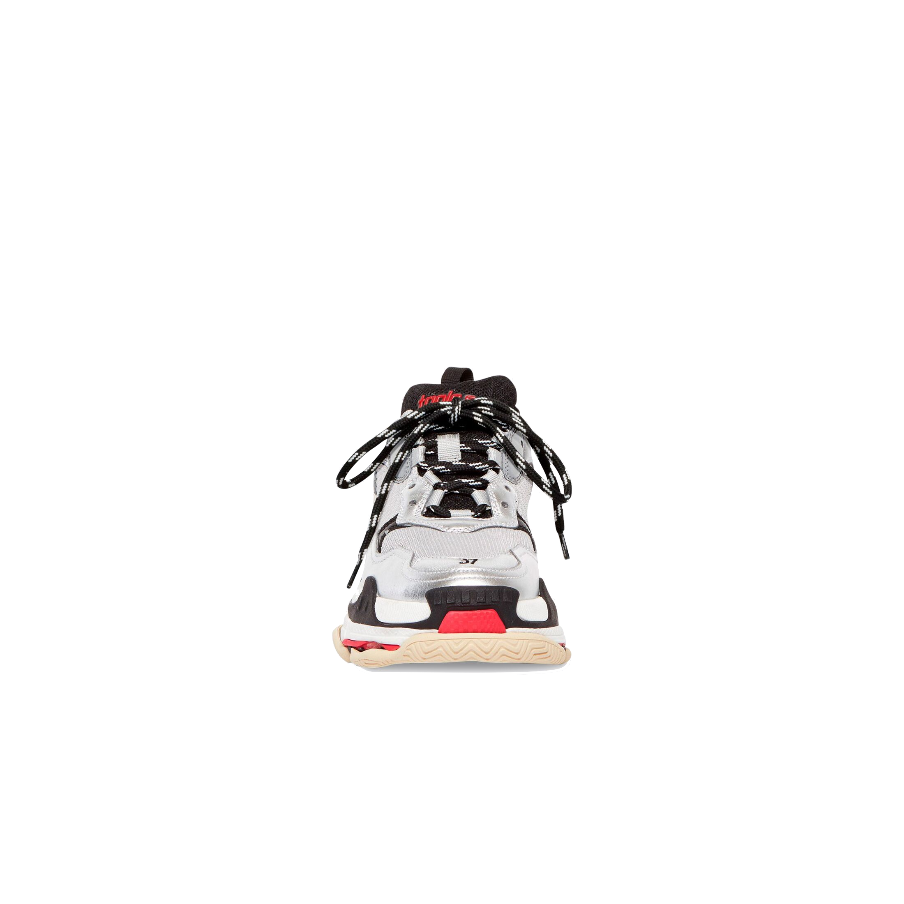

$ 1050
YEEZY IN BLACK
Triple S Sneaker in white, blue and purple double foam and mesh, calfskin and lambskin
COLOR BLACK GREY BLACK
CHECK WEBSITE AVAILABILITY
WWW.BALENCIAGA.COM
HISTORY
- • Balenciaga is an Italian high fashion sneaker brand
- • Created by two young Venetian designers Francesca Rinaldo and Alessandro Gallo, both outsiders of the fashion industry at the beginning
- • Founded in 2000 in Venice, Italy
- • The brand combines a refined and modern style with a vintage feeling that is supported by the strong Italian sartorial tradition
PRODUCT DETAILS
- • Sneaker
- • Double foam and mesh, calfskin and lambskin
- • Complex 3-layered outsole
- • Embroidered size at the edge of the toe
- • Embroidered logo on the side
- • Embossed logo in the back
- • Triple S rubber branding on the tongue
- • 2 laces loops including 1 functional
- • Athletic lacing system featuring 12 fabric eyelets
- • Bicolor laces recalling hiking boots’ laces
- • 1 additional pair of laces
- • Back pull-on tab and tongue pull-on tab
- • Made in China
- • Wipe with a soft and dry cloth
- Material: 60% Polyester, 25% Calfskin, 15% Lambskin
- Product ID: 524039W09O31081/ul>
SPOTTED
- • Sneaker spotted in Upper East Side
- • Worn by a young adult on a casual walk
- • Paired with a pair of dark jeans, white t-shirt, and a leather jacket with a classic black Chanel
- • Check on footwear map